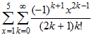
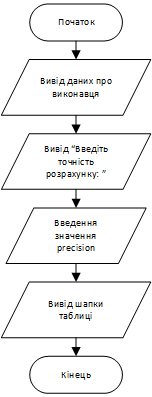
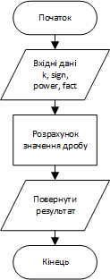
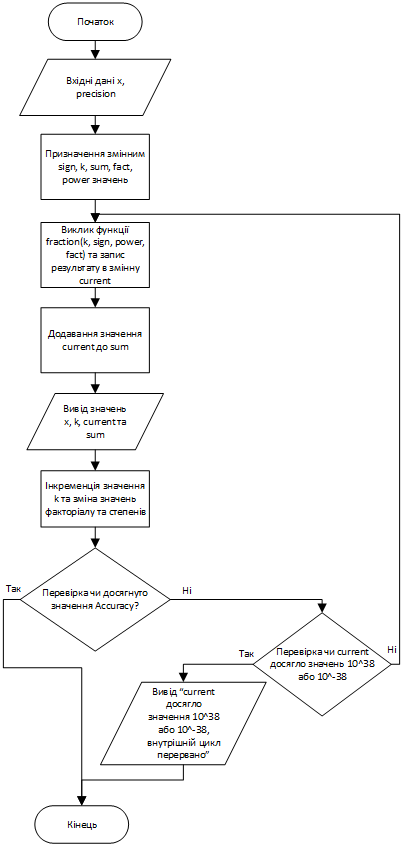
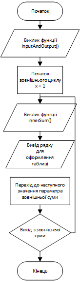
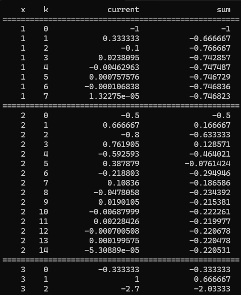
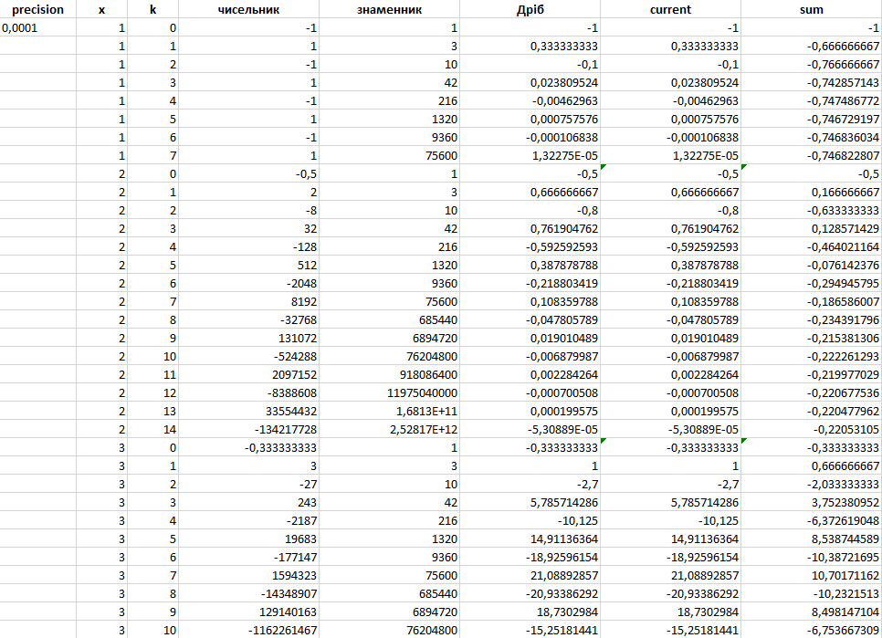

Лабораторна робота · 03
Лабораторна робота 3
Тема та мета
Тема: Циклічні обчислювальні процеси.
Мета: Вивчити особливості циклічних обчислювальних процесів, опанувати оператори циклів та розроблення алгоритмів циклічних процесів.
Умова завдання
Обчислити подвійну суму. Параметр зовнішньої суми x змінюється від 1 до 5, внутрішньої — k від 0 до досягнення заданої точності. Степінь та факторіал обчислювати за рекурентними співвідношеннями.

Аналіз завдання
Користувач задає точність. Для кожного x внутрішній цикл додає поточний член до суми та виводить x, k, current і sum. Початкові значення: sign = −1, factorial = 1, power = 1/x. Після кожної ітерації знак змінюється, k збільшується, factorial множиться на k, а power — на x².
Внутрішній цикл завершується при |current| ≤ accuracy або досягненні меж FLT_MAX / FLT_MIN. Кількість доданків залежить від x. Програма виводить окремі внутрішні суми.
Блок-схеми




Код програми
Циклічне обчислення ряду
#include <iostream>
#include <iomanip>
#include <windows.h>
#include <cmath>
#include <cfloat>
using namespace std;
void inputAccuracy(float& accuracy)
{
cout << "Введіть точність розрахунку: ";
cin >> accuracy;
}
void outputTableHeader()
{
cout << "====================================================" << endl;
cout << setw(5) << "x" << setw(5) << "k" << setw(20) << "current" << setw(20) << "sum" << endl;
cout << "====================================================" << endl;
}
double calculateFraction(int k, int sign, double power, double factorial)
{
double result;
result = (sign * power) / ((2 * k + 1) * factorial);
return result;
}
void innerSum(int x, float accuracy)
{
int sign = -1;
int k = 0;
double sum = 0;
double factorial = 1;
double power = 1.0 / x;
while (true)
{
double current = calculateFraction(k, sign, power, factorial);
sum += current;
cout << setw(5) << x << setw(5) << k << setw(20) << current << setw(20) << sum << endl;
if (fabs(current) <= accuracy)
{
break;
}
else if (fabs(current) >= FLT_MAX || fabs(current) <= FLT_MIN)
{
cout << "current досягло значення 10^38 або 10^-38, внутрішній цикл перервано" << endl;
break;
}
sign *= -1;
k++;
factorial *= k;
power *= x * x;
}
}
int main()
{
SetConsoleOutputCP(1251);
SetConsoleCP(1251);
float accuracy;
cout << "Анастасьєв Володимир Андрійович ІПЗ11" << endl;
inputAccuracy(accuracy);
outputTableHeader();
for (int x = 1; x < 6; x++)
{
innerSum(x, accuracy);
cout << "====================================================" << endl;
}
}
Перевірка розрахунків


Висновки
У ході виконання лабораторної роботи було опановано організацію вкладених циклів для обчислення ряду. Зовнішній цикл for перебирає значення x від 1 до 5, а внутрішній цикл while обчислює члени ряду до виконання умови завершення. Набуто навичок керування кількістю повторень за допомогою заданої точності та оператора break.
Для визначення степеня та факторіала застосовано рекурентні співвідношення: кожне наступне значення отримується з попереднього. Такий підхід дозволяє виконувати обчислення без окремого виклику функцій піднесення до степеня і розрахунку факторіала на кожній ітерації. Знак поточного члена змінюється після кожного повторення, що відповідає знакозмінному характеру ряду.
У програмі реалізовано виведення таблиці зі значеннями x, k, поточного члена та накопиченої внутрішньої суми. Умови завершення враховують модуль поточного члена, задану точність і межі FLT_MAX та FLT_MIN. Результати для точності 0,0001 наведено разом із контрольним розрахунком в Excel, що дозволяє зіставити окремі члени та проміжні суми.
Робота закріпила розуміння різниці між циклом із заданою кількістю повторень і циклом, завершення якого визначається числовою умовою. Програма виводить внутрішню суму окремо для кожного x; підсумкове додавання цих п’яти сум у ній не виконується. Отримані навички є основою для подальшого програмування ітераційних чисельних алгоритмів.